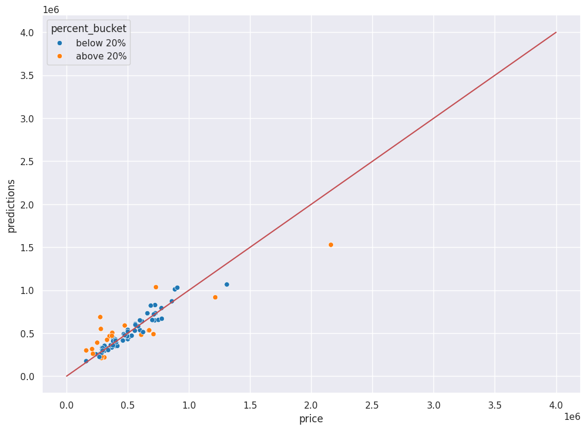

# MODULE 03 - HOUSING HOLDOUT GRADING
from pathlib import Path
import pandas as pd
import seaborn as sns
import matplotlib.pyplot as plt
import numpy as np
from sklearn.metrics import confusion_matrix
from sklearn.metrics import root_mean_squared_error, mean_squared_error, r2_score, mean_absolute_error, median_absolute_error
# READ IN THE CSV FILES
team_dir = Path("./")
teams = team_dir.glob("price (3).csv")
team_list = []
for team in teams:
# print(latent_file)
team_list.append((str(team).split("-",1)[0],team))
# print(team_list)Prep work:
Download team csv predictions file
Rename files to team8-module3-predictions.csv where team8 is the name of your team
Make sure file is one column and remove any extra columns
Make sure the heading is set to “price” (without quotes)
Upload csv predictions to session storage area.
Click the folder icon, then click the upload icon (paper with an upward arrow)
Run the notebook (Runtime -> Run all)
# READ IN THE HOLDOUT ANSWERS
targets_file = "https://raw.githubusercontent.com/byui-cse/cse450-course/master/data/housing_holdout_test_mini_answers.csv"
targets = pd.read_csv(targets_file)
# targets# ARE THE STUDENT DATASETS THE CORRECT LENGTH
student_datasets = {}
for (group, file) in team_list:
ds = pd.read_csv(file)
if ds.shape != targets.shape:
print(f"Error group {group} ds had {ds.shape} rows and columns instead of the expected {targets.shape}. It will be excluded.")
else:
student_datasets[group] = ds
print(f"Group {group} added successfully")Group price (3).csv added successfully# student_datasetsresults_dict = {}for group, student_ds in student_datasets.items():
student_dict = {}
# print(group,cm)
student_ds.columns=['price']
mse = root_mean_squared_error(targets, student_ds)
# print("{} - RMSE: {}".format(group, mse))
student_dict["RMSE"] = root_mean_squared_error(targets, student_ds)
student_dict["Mean Abs Error"] = mean_absolute_error(targets, student_ds)
student_dict["Median Abs Error"] = median_absolute_error(targets, student_ds)
student_dict["R2"] = r2_score(targets, student_ds)
combined = pd.concat([targets, student_ds], axis=1)
combined.columns = ["target", "pred"]
combined["absdiff"] = (combined["target"] - combined["pred"]).abs()
combined["absdiff_pct"] = combined["absdiff"] / combined["target"]
shower = pd.DataFrame(student_ds, columns = ['price'])
shower.columns = ['predictions']
testfinal = pd.concat([shower,targets['price']],axis=1)
testfinal['difference'] = testfinal['price']-testfinal['predictions']
testfinal['percent_difference'] = abs(testfinal['difference']/testfinal['price'])
testfinal['percent_bucket'] = [ "above 20%" if i >= 0.2 else "below 20%" for i in testfinal.percent_difference ]
# testfinal
student_dict['dataset'] = testfinal
percents = [5, 10, 20]
for percent in percents:
student_dict[f"Percent of houses within {percent} percent"] = len(combined[combined["absdiff_pct"] <= (percent /100)]) / len(combined) * 100
results_dict[group] = student_dict# df['predictions']# results_dictresults_df = pd.DataFrame(results_dict)
results_ds_trans = results_df.transpose()
results_ds_trans = results_ds_trans.drop(columns=["dataset"])
results_ds_trans = results_ds_trans.round(2)
results_ds_trans = results_ds_trans.sort_values(by="R2",ascending=False)# results_dfsns.set(rc={'figure.figsize':(11.7,8.27)})
for team_results in results_dict.items():
testfinal = team_results[1]['dataset']
# print(team_results['dataset'])
# print(f"R-Squared Value: {r2}")
print(f"-------------------------------- {team_results[0].upper()} RESULTS ---------------------------------\n")
print(f" Within 5%: {team_results[1]['Percent of houses within 5 percent']}%\n",
f"Within 10%: {team_results[1]['Percent of houses within 10 percent']}%\n",
f"Within 20%: {team_results[1]['Percent of houses within 20 percent']}%\n",
f"R^2: {team_results[1]['R2']}%\n",
f"RMSE: {team_results[1]['RMSE']}\n",
f"Mean Absolute Error: {team_results[1]['Mean Abs Error']}\n",
f"Median Aboslute Error: {team_results[1]['Median Abs Error']}")
color_dict = dict({'below 20%':'tab:blue',
'above 20%': 'tab:orange'})
# print(testfinal['abspercentmiss'].describe(percentiles=[.1,.2,.3,.4,.5,.6,.7,.8,.9,.95]))
xlims=(0,4e6)
ylims=(0,4e6)
ax = sns.scatterplot(data=testfinal,x='price',y='predictions',hue="percent_bucket",palette=color_dict)
# ax.set(xscale="log", yscale="log", xlim=xlims, ylim=ylims)
ax.plot(xlims,xlims, color='r')
# plt.legend(labels=['perfect',"below 5",'above 5','10-20%','above 20'])
plt.show()
print(f"-"*77)
print("\n"*3)-------------------------------- PRICE (3).CSV RESULTS ---------------------------------
Within 5%: 23.456790123456788%
Within 10%: 45.67901234567901%
Within 20%: 74.07407407407408%
R^2: 0.8057082601457985%
RMSE: 125995.62348901793
Mean Absolute Error: 79095.08802469134
Median Aboslute Error: 45747.19
-----------------------------------------------------------------------------
results_ds_trans = results_df.transpose()
results_ds_trans = results_ds_trans.drop(columns=["dataset"])
results_ds_trans.to_csv("class_results.csv")
results_ds_trans| RMSE | Mean Abs Error | Median Abs Error | R2 | Percent of houses within 5 percent | Percent of houses within 10 percent | Percent of houses within 20 percent | |
|---|---|---|---|---|---|---|---|
| price (3).csv | 125995.623489 | 79095.088025 | 45747.19 | 0.805708 | 23.45679 | 45.679012 | 74.074074 |